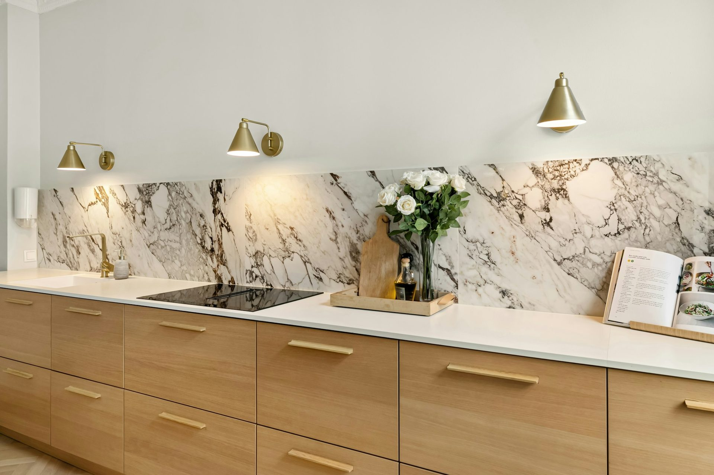

Kitchen colours
and materials in 2026.
Cool grey is over. Here is what has replaced it, why, and what each choice does to the price of your kitchen.

The palette moved warm, and it moved decisively
For most of the last decade the safe Australian kitchen was cool grey with a white benchtop. That has genuinely ended. The colours being specified now are warm whites, putty, mushroom, taupe, clay and muted sage — tones with some earth in them that let natural materials sit comfortably alongside.
The reason is not fashion for its own sake. Cool grey fights timber, and timber has come back hard. Put an oak veneer against a cool grey door and one of them looks wrong; put it against putty or mushroom and they read as a set.
Where the bold colour goes
The move to warm neutrals has not made kitchens timid. What has changed is where the colour sits. Rather than a whole kitchen in a strong colour, the pattern now is a neutral run with one committed element — forest green, burgundy, navy or deep brown on an island, a bank of tall cabinetry, or the door concealing a butler’s pantry.
That approach is also far easier to live with. An island can be repainted or replaced in a way a whole kitchen cannot, so the risk of a bold choice is contained.
Timber is the defining material
Natural timber is the clearest material trend of 2026, used to soften kitchens that would otherwise read as hard. In practice that means veneer rather than solid — a rift-cut or quarter-cut oak, finished in a hard-wax oil or a matte lacquer, celebrating the grain rather than hiding it.
Worth knowing before you commit: timber veneer costs more than laminate and it moves more. In a Central Queensland kitchen that gets afternoon sun, where you put it matters. We would rather use it where you touch it and specify something more stable where the sun lands.
Matte has beaten gloss
Soft-touch laminates and lightly grained timber-look surfaces now dominate over high gloss. Matte hides fingerprints, does not throw glare across a room, and photographs better in the natural light most Queensland kitchens have plenty of.
Flat-panel doors have returned alongside it — smooth faces, streamlined edges, no profile. It is a quieter look than the shaker that preceded it, and it suits a handleless rail or push-to-open particularly well.
What this costs you
Roughly: laminate and matte finishes sit at the bottom of the range and behave well here. Two-pack paint sits in the middle and can be any colour you like, which is how most people get a bold island without committing the whole kitchen. Timber veneer sits above that.
The benchtop moves the number more than the doors do. Laminate is included, engineered stone adds around $1,750 on a compact run, and porcelain or sintered stone adds more again while handling heat and sun better than anything else.
Frequently asked
Common questions
If your question is not here, call the studio. We would rather talk it through than have you guess.
Ask us directly →Is grey completely out for kitchens?
Cool grey has fallen away sharply, yes — the palette has moved to warm whites, putty, mushroom, taupe, clay and muted sage. Warm greys still work, particularly alongside timber. If you already have a cool grey kitchen you do not need to panic; it reads as of its moment rather than as a mistake.
Will timber veneer survive a Queensland summer?
Yes, if it is specified sensibly. Veneer is stable in normal use, but direct afternoon sun will fade and move any timber over years. We use it where you touch it and specify something more stable where the sun actually lands, which is usually one or two runs rather than the whole kitchen.
What colour holds its value longest?
A warm neutral on the bulk of the cabinetry, with the personality in one contained element. It ages well, it does not date the room to a single year, and if you tire of the bold piece you can change one island rather than a whole kitchen.

Put it to use
Reading is one thing.
Your room is another.
Send us your dimensions and we will tell you what actually works in your space — and what it costs. Free, fixed, and yours to keep either way.